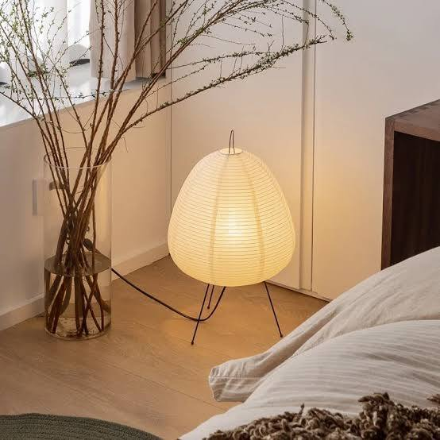

The €400 Round Coffee Table vs. the Amazon Version — Where the Price Actually Goes
The round, low, three-legged wood table has become one of the most recognizable silhouettes in contemporary interior design — a shape simple enough that it shows up at nearly every price point, from boutique European furniture studios charging several hundred euros to Amazon listings charging under €150 for what looks, in a photo, like the same object.

One of the clearest examples of the design end of that range is the Momoko table from EMKO, a Lithuanian furniture studio — a piece explicitly inspired by Japanese Torii gate architecture combined with Nordic material sensibility, priced roughly €250 to €450 depending on size and finish, and sold through boutique retailers rather than mass marketplaces.
At the other end, Amazon carries several near-identical round three-leg pine tables, in the same general proportions, for a fraction of the cost.
We put the two side by side — not to declare a winner, but to find out exactly what the extra few hundred euros is paying for.
[PHOTO PLACEHOLDER — both tables side by side or in matching room settings]Specification Comparison
| Criterion | EMKO Momoko | Amazon 3-Leg Table |
|---|---|---|
| Price range (EU) | ≈ €250–450 | ≈ €80–150 |
| Material | Oak veneer or solid oak, several finish options | Solid pine wood, natural finish |
| Design origin | Purpose-designed by etc.etc. studio | Generic manufacturer design |
| Sizes available | Multiple diameters, side/coffee formats | Four sizes (60cm to 120cm) |
| Assembly | Typically delivered assembled | Flat-pack, full self-assembly |
| Lead time (EU) | Around 20 working days, made to order | Standard delivery, from stock |
| Wood grade | Furniture-grade oak | Pine — softer, less dense wood |
Recommended Sources
Explore availability through our preferred retailers
Amazon (Budget Alternative) EMKO Place (Original Design)What the Extra Cost Is Actually Buying
The most material difference is wood species and grade. Oak is a hardwood — denser, more resistant to surface dents and scratches, and it ages with a more refined patina over years of use.
Pine, used in the Amazon version, is a softwood: lighter, more affordable to source and machine, and considerably more prone to dents, scuffs, and pressure marks from daily use — a coffee table that holds drinks, feet, and laptops takes more direct contact than almost any other piece of furniture in a living room.
There's also a design-authorship component that doesn't show up in a spec sheet.
The Momoko's proportions were deliberately developed around a specific architectural reference (the Torii gate's transition-threshold form), rather than reverse-engineered from an existing popular silhouette.
If provenance and the story behind an object's shape matter to how you experience a room, that's a real value — just not a measurable one.
Finally, the EMKO piece is made to order in small furniture runs rather than mass-manufactured, which affects both consistency and environmental footprint per unit in ways that are difficult to fully replicate at Amazon-scale production volumes.
Where the Amazon Version Holds Its Own
Structurally, both tables solve the same basic engineering problem: a round top, low profile, three-point wood-leg base for stability on uneven flooring.
The three-leg configuration itself is the real design workhorse here — it's what gives the silhouette its sense of lightness and its stability, and that geometry is identical across both tiers.
For a first apartment, a rental, or a room where the coffee table isn't the design focal point, the pine version does the visual job.
From normal seating distance, wood grain and finish differences are far less noticeable than the age of the table and how well it's cared for.
A pine table treated carefully — coasters, no direct heat, a light wood conditioner occasionally — can look presentable for years despite being the softer material.
[BANNER PLACEHOLDER — Amazon OneLink product banner]Round Coffee Table, Solid Wood, 3-Leg Design Natural pine finish · Available in 60cm / 80cm / 100cm / 120cm
[CHECK CURRENT PRICE → AFFILIATE LINK] (Insert your Amazon OneLink URL and product tag here)Where the Gap Becomes Real
The comparison stops being close in two specific situations. First, high-traffic households — if the table will regularly take direct weight, drinks without coasters, or pet contact, pine's softness becomes a genuine long-term liability rather than an acceptable trade-off.
Second, assembly and delivery experience: the Amazon version requires full flat-pack assembly, and lower-cost flat-pack wood furniture is where fit and finish issues (uneven joints, visible screws, alignment gaps) most commonly show up.
If assembly quality varies within a single batch, that inconsistency is where the price gap is most honestly earned.
Our Technical Verdict
Design fidelity to the premium silhouette: ★★★★★
Material durability (pine vs. oak): ★★★☆☆
Assembly and finish consistency: ★★★☆☆
Value for the price point: ★★★★★
Longevity under daily use: ★★★☆☆
Visual impact from normal seating distance: ★★★★★
Hype-to-substance ratio: favorable. The three-leg round silhouette is a genuinely sound piece of furniture geometry, not a trend built on a gimmick, and that geometry transfers accurately to the lower-cost version.
The real trade-off is wood species and assembly quality, not visual authenticity.
The most accurate description: a legitimate lower-cost interpretation of a well-engineered shape, with real (not cosmetic) durability trade-offs concentrated in high-contact households — and a strong option everywhere else.

The Intentional Consumption Angle
This comparison is a useful test of what buying with intention actually means for furniture specifically, where the stakes of a wrong purchase are higher than a €25 vase.
The Momoko's premium is concentrated in material grade and design authorship — both genuinely meaningful if the table will live in a home for a decade.
The Amazon version's value is concentrated in getting a sound, well-proportioned shape into a room now, for a fraction of the cost, while accepting a shorter realistic lifespan.
Neither is the "wrong" choice. The more intentional one is whichever matches how long you actually expect the table to stay in your life — a first apartment table doesn't need to outlast a decade of ownership to have been a good decision.
FAQ
Is a pine coffee table as durable as an oak one?
<No — pine is a softer wood and is more prone to dents, scratches, and pressure marks from daily use. It remains a functional and visually similar option for lighter use or shorter-term ownership.
Does a round three-leg table need to be against a wall?
No. The three-leg design is typically self-stabilizing on level flooring and works well as a freestanding centerpiece, which is part of why the silhouette is so widely used.
Are budget round coffee tables hard to assemble?
Most ship flat-pack with a three-leg wood base attaching to a round top. Assembly is generally straightforward, though fit and finish can vary between manufacturing batches.
What's the actual visual difference between a designer version and a budget dupe?
From normal seating distance, the difference is minimal. Closer inspection reveals it in wood grain quality, joint precision, and finish depth — details that matter most to people who spend a lot of time in close proximity to the piece.
How do I make a pine coffee table last longer?
Use coasters and placemats consistently, avoid placing hot items directly on the surface, and apply a wood conditioner or wax periodically to protect the grain from moisture and surface wear.
Affiliate disclosure: This article contains Amazon affiliate links. See our [Affiliate Disclosure] and [Editorial Policy] for details.